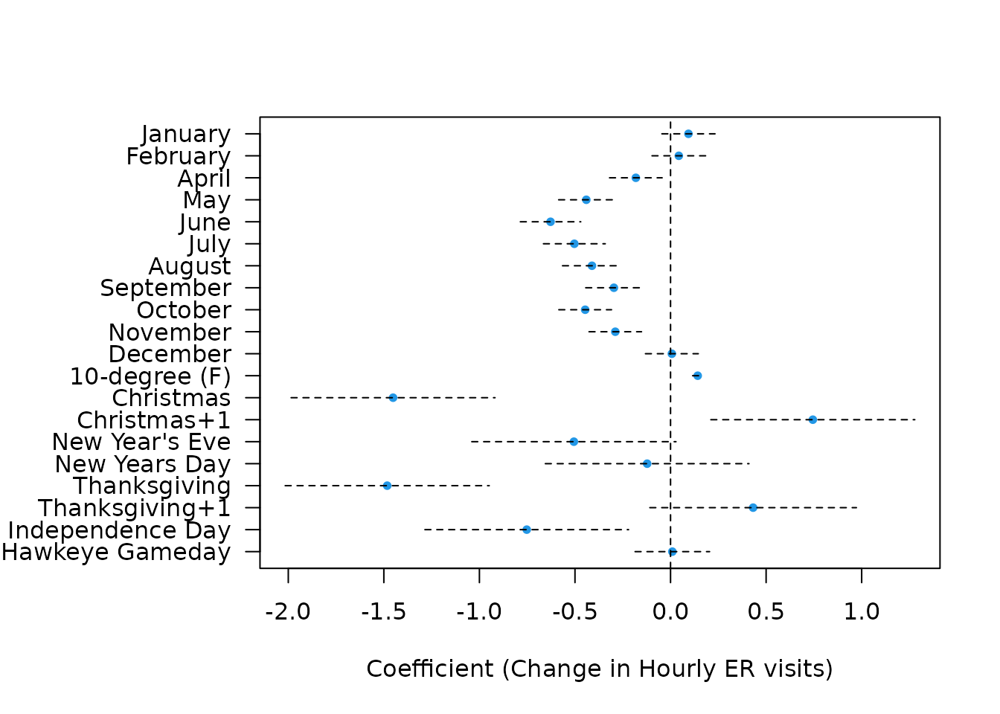

Modeling Multi-Modal Hourly Data
hourly_er_visits.RmdThe uihc_ed_arrivals data set
The University of Iowa Hospitals and Clinics (UIHC) Emergency Department Arrivals data set is included as a component of this package, and consists of 41,640 hourly counts of number of new arrivals into the ED spanning the years 2013-2018. See the data set documentation, ?uihc_ed_arrivals, for more information.
Modeling the data
Endogenous model (SRLPAC)
First we’ll load and summarize the data. Note that although we have plenty of information on year, month, and day, the data set has already been sorted by time.
data("uihc_ed_arrivals")
str(uihc_ed_arrivals)
#> 'data.frame': 41640 obs. of 17 variables:
#> $ Year : num 2013 2013 2013 2013 2013 ...
#> $ Quarter : Factor w/ 4 levels "Q1","Q2","Q3",..: 1 1 1 1 1 1 1 1 1 1 ...
#> $ Month : num 7 7 7 7 7 7 7 7 7 7 ...
#> $ Day : num 1 1 1 1 1 1 1 1 1 1 ...
#> $ Hour : num 0 1 2 3 4 5 6 7 8 9 ...
#> $ Arrivals: num 5 5 8 2 2 1 4 1 4 6 ...
#> $ Date : Date, format: "2013-07-01" "2013-07-01" ...
#> $ Weekday : Ord.factor w/ 7 levels "Sun"<"Mon"<"Tue"<..: 2 2 2 2 2 2 2 2 2 2 ...
#> $ temp : num 57 57 57 56 56 57 59 60 60 61 ...
#> $ xmas : num 0 0 0 0 0 0 0 0 0 0 ...
#> $ xmas2 : num 0 0 0 0 0 0 0 0 0 0 ...
#> $ nye : num 0 0 0 0 0 0 0 0 0 0 ...
#> $ nyd : num 0 0 0 0 0 0 0 0 0 0 ...
#> $ thx : num 0 0 0 0 0 0 0 0 0 0 ...
#> $ thx1 : num 0 0 0 0 0 0 0 0 0 0 ...
#> $ ind : num 0 0 0 0 0 0 0 0 0 0 ...
#> $ game_day: num 0 0 0 0 0 0 0 0 0 0 ...Let’s pull out our outcome and look at it.
y <- uihc_ed_arrivals$Arrivals
plot(y, type = "l")
OK, not too helpful visually. Such is the trap of being so close to asymptopia. Let’s look a bit closer at the partial autocorrelation function to see what kind of seasonality and autoregressive (AR) structure we could be dealing with.
# number of maximum lags to consider
n_lags_max <- 24*7*5 # consider 5 weeks' data lags
pacfs <- pacf(ts(y), lag.max = n_lags_max, plot = F)
plot(pacfs)
Clearly we have multiple modes of seasonality in this hourly data, likely corresponding to observed shift-based, daily, and weekly patterns. Thankfully the sparsity ranked lasso (SRL) time series fitting procedure can handle this situation in stride.
We can fit an endogenous SRLPAC model using one line of code which might take 1-2 minutes to run:
srlpac <- srlTS(y, n_lags_max = n_lags_max)We can investigate the performance of the SRLPAC model using associated print, coef, summary, and plot functions.
srlpac
#> PF_gamma best_AICc best_BIC
#> 0.00 155231.7 156254.6
#> 0.25 155195.8 155964.1
#> 0.50 155190.4 155939.0
#> 1.00 155457.4 155943.7
#> 2.00 157625.4 157826.7
#> 4.00 162570.0 162637.1
#> 8.00 169220.7 169245.9
#> 16.00 169220.7 169245.9
#>
#> Test-set prediction accuracy
#> rmse rsq mae
#> AIC 2.661505 0.5310037 2.059681
#> BIC 2.664962 0.5298691 2.064657By default, srlTS used 8 possible tuning parameters for \(\gamma\), the penalty weight exponent, and using AICc as a judge it appears the best value is 0.5. By default, the argument p_train is set to 0.8, which means we also get prediction accuracy for a left-out 20% of the data, and revealing an R-squared of 53.1%, meaning that about half of the variance in hourly visits to the ED can be explained by multi-modal seasonal and local autoregressive patterns.
The lasso’s solution path for these lags can be seen via the plot function.
plot(srlpac)
To see the (long) list of selected coefficients, the summary function can be used.
Expand to see output
summary(srlpac)
#> Using a basic kernel estimate for local fdr; consider installing the ashr package for more accurate estimation. See ?local_mfdr
#> Model summary at optimal AICc (lambda=0.0015; gamma=0.5)
#> lasso-penalized linear regression with n=32472, p=840
#> At lambda=0.0015:
#> -------------------------------------------------
#> Nonzero coefficients : 201
#> Expected nonzero coefficients: 124.63
#> Average mfdr (201 features) : 0.620
#>
#> Estimate z mfdr Selected
#> lag1 5.047e-02 13.5997 < 1e-04 *
#> lag168 3.075e-02 8.6541 < 1e-04 *
#> lag336 3.011e-02 8.5221 < 1e-04 *
#> lag840 2.720e-02 7.9715 < 1e-04 *
#> lag504 2.760e-02 7.9247 < 1e-04 *
#> lag673 2.577e-02 7.5147 < 1e-04 *
#> lag505 2.590e-02 7.4932 < 1e-04 *
#> lag672 2.494e-02 7.3047 < 1e-04 *
#> lag337 2.465e-02 7.1122 < 1e-04 *
#> lag3 2.395e-02 6.7734 < 1e-04 *
#> lag503 2.304e-02 6.7301 < 1e-04 *
#> lag167 2.305e-02 6.6151 < 1e-04 *
#> lag671 2.093e-02 6.2762 < 1e-04 *
#> lag170 2.136e-02 6.2511 < 1e-04 *
#> lag2 2.248e-02 6.2089 < 1e-04 *
#> lag47 2.191e-02 6.2032 < 1e-04 *
#> lag144 2.013e-02 5.8676 < 1e-04 *
#> lag432 1.908e-02 5.7448 < 1e-04 *
#> lag72 1.985e-02 5.6922 < 1e-04 *
#> lag674 1.752e-02 5.4118 < 1e-04 *
#> lag24 1.899e-02 5.3635 < 1e-04 *
#> lag96 1.828e-02 5.3247 < 1e-04 *
#> lag647 1.662e-02 5.1731 < 1e-04 *
#> lag839 1.594e-02 5.1414 < 1e-04 *
#> lag71 1.780e-02 5.1341 < 1e-04 *
#> lag335 1.643e-02 4.9851 < 1e-04 *
#> lag73 1.679e-02 4.9224 0.00012924 *
#> lag166 1.649e-02 4.9127 0.00013687 *
#> lag528 1.511e-02 4.8434 0.00021101 *
#> lag22 1.702e-02 4.8170 0.00025250 *
#> lag23 1.687e-02 4.7827 0.00032225 *
#> lag283 -1.541e-02 -4.7905 0.00117894 *
#> lag644 -1.410e-02 -4.5745 0.00324570 *
#> lag481 1.334e-02 4.2374 0.00578817 *
#> lag192 1.299e-02 4.1148 0.00659483 *
#> lag190 1.246e-02 4.0150 0.00787831 *
#> lag169 1.282e-02 3.9885 0.00834837 *
#> lag838 1.104e-02 3.9208 0.00986811 *
#> lag600 1.139e-02 3.8620 0.01169054 *
#> lag648 1.110e-02 3.7956 0.01447996 *
#> lag649 1.097e-02 3.7373 0.01783076 *
#> lag143 1.197e-02 3.7338 0.01806154 *
#> lag25 1.242e-02 3.6694 0.02332690 *
#> lag6 1.245e-02 3.6057 0.03075707 *
#> lag670 1.029e-02 3.5438 0.04120586 *
#> lag770 9.780e-03 3.5034 0.05043729 *
#> lag338 1.036e-02 3.4741 0.05863041 *
#> lag520 -1.114e-02 -3.7583 0.07077636 *
#> lag533 -1.006e-02 -3.5702 0.08643562 *
#> lag317 -9.565e-03 -3.4451 0.10139174 *
#> lag241 9.869e-03 3.3625 0.10348058 *
#> lag152 -9.465e-03 -3.2413 0.13291889 *
#> lag212 -9.045e-03 -3.2280 0.13590142 *
#> lag700 -8.466e-03 -3.1938 0.14428893 *
#> lag462 -8.431e-03 -3.1205 0.16765963 *
#> lag634 -7.853e-03 -3.0316 0.21023330 *
#> lag502 8.282e-03 2.9906 0.22748657 *
#> lag263 8.436e-03 2.9902 0.22757536 *
#> lag288 8.089e-03 2.9506 0.23613700 *
#> lag191 8.389e-03 2.9402 0.23868476 *
#> lag816 7.216e-03 2.9364 0.23964450 *
#> lag4 9.260e-03 2.9319 0.24079490 *
#> lag547 -7.587e-03 -2.9837 0.24196266 *
#> lag519 -7.779e-03 -2.9828 0.24261208 *
#> lag575 6.819e-03 2.7771 0.29361989 *
#> lag316 -7.387e-03 -2.9072 0.31061649 *
#> lag26 8.463e-03 2.7197 0.31808234 *
#> lag214 6.894e-03 2.6843 0.33398265 *
#> lag46 8.541e-03 2.6800 0.33590529 *
#> lag492 -6.765e-03 -2.8788 0.34297048 *
#> lag564 6.785e-03 2.6438 0.35259573 *
#> lag145 7.483e-03 2.6102 0.36851885 *
#> lag121 7.381e-03 2.5599 0.39306042 *
#> lag55 1.701e-03 2.5127 0.41738231 *
#> lag40 5.068e-03 2.5026 0.42284245 *
#> lag334 6.476e-03 2.4806 0.43499775 *
#> lag440 5.460e-03 2.4031 0.48283202 *
#> lag312 6.049e-03 2.3948 0.48848405 *
#> lag792 4.504e-03 2.3945 0.48870811 *
#> lag696 3.688e-03 2.3900 0.49181933 *
#> lag7 7.894e-03 2.3793 0.49936433 *
#> lag142 6.509e-03 2.3462 0.52449501 *
#> lag37 -8.194e-03 -2.7582 0.53142891 *
#> lag264 5.775e-03 2.2844 0.57848564 *
#> lag615 4.703e-03 2.2487 0.61417945 *
#> lag8 7.358e-03 2.2373 0.62625252 *
#> lag116 -6.727e-03 -2.6938 0.66474447 *
#> lag119 6.131e-03 2.1880 0.68266674 *
#> lag697 3.769e-03 2.1711 0.70363651 *
#> lag479 4.822e-03 2.1663 0.70966547 *
#> lag722 3.862e-03 2.1559 0.72298340 *
#> lag781 5.059e-03 2.1534 0.72614207 *
#> lag384 4.518e-03 2.1383 0.74594804 *
#> lag216 4.961e-03 2.1265 0.76177334 *
#> lag580 -5.824e-03 -2.6429 0.77812056 *
#> lag360 4.369e-03 2.1069 0.78857230 *
#> lag817 3.194e-03 2.0851 0.81897597 *
#> lag406 3.941e-03 2.0759 0.83214380 *
#> lag11 -3.313e-04 -0.3710 0.88337658 *
#> lag266 4.313e-03 2.0302 0.89765999 *
#> lag70 5.802e-03 2.0072 0.93095507 *
#> lag60 -8.267e-04 -0.9440 0.96962579 *
#> lag5 1.796e-03 0.7846 1.00000000 *
#> lag10 4.621e-03 1.5155 1.00000000 *
#> lag13 3.796e-03 1.3676 1.00000000 *
#> lag15 9.660e-04 0.8174 1.00000000 *
#> lag18 3.299e-03 1.4689 1.00000000 *
#> lag21 5.688e-03 1.8231 1.00000000 *
#> lag30 5.488e-04 0.9108 1.00000000 *
#> lag32 1.548e-03 1.2160 1.00000000 *
#> lag34 3.990e-03 1.7879 1.00000000 *
#> lag41 -1.492e-03 -1.3014 1.00000000 *
#> lag50 -1.587e-03 -1.2593 1.00000000 *
#> lag54 -3.115e-03 -1.4952 1.00000000 *
#> lag58 5.343e-04 1.1262 1.00000000 *
#> lag74 4.818e-03 1.9117 1.00000000 *
#> lag76 -3.985e-03 -1.8829 1.00000000 *
#> lag84 -3.251e-03 -1.6239 1.00000000 *
#> lag92 1.436e-03 1.3917 1.00000000 *
#> lag95 4.709e-03 1.7707 1.00000000 *
#> lag97 4.139e-03 1.6618 1.00000000 *
#> lag112 2.772e-04 1.1772 1.00000000 *
#> lag120 4.499e-03 1.7794 1.00000000 *
#> lag126 -1.122e-03 -1.0248 1.00000000 *
#> lag133 -6.166e-04 -1.2922 1.00000000 *
#> lag136 2.052e-03 1.7073 1.00000000 *
#> lag141 3.818e-03 1.7347 1.00000000 *
#> lag148 -2.829e-03 -1.6247 1.00000000 *
#> lag149 -4.482e-03 -1.9845 1.00000000 *
#> lag150 -3.738e-03 -1.8145 1.00000000 *
#> lag154 -1.846e-03 -1.4016 1.00000000 *
#> lag165 1.002e-05 0.7632 1.00000000 *
#> lag172 -3.634e-03 -1.9687 1.00000000 *
#> lag185 -6.248e-03 -2.4878 1.00000000 *
#> lag189 1.049e-03 1.2842 1.00000000 *
#> lag193 1.743e-03 1.3299 1.00000000 *
#> lag196 -1.283e-03 -1.3630 1.00000000 *
#> lag198 -1.105e-03 -1.3789 1.00000000 *
#> lag204 -6.142e-04 -1.2745 1.00000000 *
#> lag211 -5.535e-04 -1.1453 1.00000000 *
#> lag217 2.580e-03 1.6224 1.00000000 *
#> lag232 3.133e-03 1.8421 1.00000000 *
#> lag255 2.685e-03 1.7900 1.00000000 *
#> lag259 -1.317e-03 -1.3618 1.00000000 *
#> lag287 2.728e-03 1.6777 1.00000000 *
#> lag295 -2.249e-04 -1.1144 1.00000000 *
#> lag311 9.230e-04 1.1582 1.00000000 *
#> lag315 -8.906e-05 -1.2992 1.00000000 *
#> lag322 -1.336e-03 -1.5794 1.00000000 *
#> lag356 -1.982e-03 -1.4913 1.00000000 *
#> lag359 2.203e-03 1.5691 1.00000000 *
#> lag364 -1.817e-03 -1.4860 1.00000000 *
#> lag389 -1.459e-03 -1.3790 1.00000000 *
#> lag397 3.209e-03 1.8182 1.00000000 *
#> lag402 3.410e-03 1.8544 1.00000000 *
#> lag408 6.127e-04 1.2396 1.00000000 *
#> lag409 1.209e-03 1.4095 1.00000000 *
#> lag456 2.063e-03 1.6446 1.00000000 *
#> lag461 -1.487e-03 -1.4587 1.00000000 *
#> lag463 -5.048e-03 -2.2758 1.00000000 *
#> lag480 2.448e-03 1.6650 1.00000000 *
#> lag489 -5.052e-03 -2.3007 1.00000000 *
#> lag491 -4.405e-03 -2.3206 1.00000000 *
#> lag501 3.295e-03 1.8219 1.00000000 *
#> lag506 2.372e-03 1.6797 1.00000000 *
#> lag515 -2.407e-03 -1.7750 1.00000000 *
#> lag518 -2.619e-03 -1.7741 1.00000000 *
#> lag524 -4.711e-03 -2.2013 1.00000000 *
#> lag531 -1.243e-03 -1.3870 1.00000000 *
#> lag552 1.179e-03 1.6796 1.00000000 *
#> lag553 1.176e-03 1.5669 1.00000000 *
#> lag569 1.012e-03 1.3497 1.00000000 *
#> lag579 -3.673e-03 -1.9986 1.00000000 *
#> lag592 1.722e-04 1.0859 1.00000000 *
#> lag611 -4.434e-03 -2.2845 1.00000000 *
#> lag616 5.466e-04 1.2661 1.00000000 *
#> lag638 -4.583e-03 -2.1926 1.00000000 *
#> lag639 3.052e-03 1.8619 1.00000000 *
#> lag640 3.465e-04 1.2975 1.00000000 *
#> lag642 -1.341e-03 -1.4342 1.00000000 *
#> lag660 -3.190e-03 -2.0548 1.00000000 *
#> lag676 -4.239e-04 -1.2965 1.00000000 *
#> lag677 -2.231e-03 -1.7961 1.00000000 *
#> lag685 -3.053e-03 -2.1499 1.00000000 *
#> lag692 -1.303e-03 -1.4646 1.00000000 *
#> lag693 4.405e-04 1.2581 1.00000000 *
#> lag701 -1.181e-03 -1.5956 1.00000000 *
#> lag712 -2.882e-03 -1.7862 1.00000000 *
#> lag713 -1.645e-03 -1.5430 1.00000000 *
#> lag716 -5.414e-04 -1.3492 1.00000000 *
#> lag719 1.363e-03 1.7168 1.00000000 *
#> lag727 -2.566e-03 -1.7564 1.00000000 *
#> lag744 1.899e-03 1.7906 1.00000000 *
#> lag747 -1.567e-04 -1.3046 1.00000000 *
#> lag748 -1.401e-03 -1.6702 1.00000000 *
#> lag753 1.059e-03 1.2851 1.00000000 *
#> lag775 3.850e-04 1.1682 1.00000000 *
#> lag779 -1.751e-03 -1.8628 1.00000000 *
#> lag796 -2.115e-03 -1.7097 1.00000000 *
#> lag819 6.947e-05 1.0180 1.00000000 *
#> lag837 1.591e-03 1.4840 1.00000000 *Exogenous model (SRLPACx)
It’s slightly more work to add exogenous features, which might help us add in fixed effects of weekday, temperature, and holiday indicators. The extra work is setting up the matrix of exogenous features.
X_day <- as.matrix(dplyr::select(uihc_ed_arrivals, xmas:game_day))
X_month <- model.matrix(~relevel(factor(Month), ref = 3) + I(temp/10),
data = uihc_ed_arrivals)[,-1]
X <- cbind(X_month, X_day)
colnames(X) <- gsub("relevel.factor.Month., ref = 3.", "Month", colnames(X))
head(X)
#> Month1 Month2 Month4 Month5 Month6 Month7 Month8 Month9 Month10 Month11
#> 1 0 0 0 0 0 1 0 0 0 0
#> 2 0 0 0 0 0 1 0 0 0 0
#> 3 0 0 0 0 0 1 0 0 0 0
#> 4 0 0 0 0 0 1 0 0 0 0
#> 5 0 0 0 0 0 1 0 0 0 0
#> 6 0 0 0 0 0 1 0 0 0 0
#> Month12 I(temp/10) xmas xmas2 nye nyd thx thx1 ind game_day
#> 1 0 5.7 0 0 0 0 0 0 0 0
#> 2 0 5.7 0 0 0 0 0 0 0 0
#> 3 0 5.7 0 0 0 0 0 0 0 0
#> 4 0 5.6 0 0 0 0 0 0 0 0
#> 5 0 5.6 0 0 0 0 0 0 0 0
#> 6 0 5.7 0 0 0 0 0 0 0 0The result is a model matrix with month indicators (reference is March), a scaled temperature covariate, and holiday indicator variables. Now that we have our matrix of exogenous features, we can pass this to srlTS to get our SRLPACx model. We also set w_exo="unpenalized" which will allow us to conduct statistical inference on the exogenous variable coefficients (by default, they will be penalized using adaptive-lasso-style penalty weights, which makes formal inference more difficult).
srlpacx <- srlTS(y, X=X, n_lags_max = n_lags_max, w_exo = "unpenalized")The same S3 methods apply and can be used to investigate the performance of the SLRPACx model.
srlpacx
#> PF_gamma best_AICc best_BIC
#> 0.00 155062.8 156237.2
#> 0.25 155023.3 155978.9
#> 0.50 155007.5 155974.7
#> 1.00 155300.0 155997.0
#> 2.00 157356.9 157742.6
#> 4.00 162064.9 162308.1
#> 8.00 168573.6 168766.5
#> 16.00 168573.6 168766.5
#>
#> Test-set prediction accuracy
#> rmse rsq mae
#> AIC 2.656204 0.5328857 2.054256
#> BIC 2.658211 0.5321868 2.057566Again, srlTS used 8 possible tuning parameters for \(\gamma\), and it appears the best value is 0.5. The addition of exogenous features has slightly improved the prediction accuracy on the left-out test data, with an R-squared of 53.3%. This may appear to be a very small increase, but it could add up (as we will see shortly) when predictions are made multiple steps ahead, or when the cumulative sum of predictions is of interest.
The lasso’s solution path for these lags can be seen via the plot function.
plot(srlpacx)
To see the (long) list of selected coefficients, the summary function can be used. In this case, we’re most interested in the exogenous features, which can be extracted via the unpenTable object in the results returned from summary (this is thanks in large part to the ncvreg package).
s <- summary(srlpacx)
s$unpenTable | Estimate | std.error | statistic | p.value | |
|---|---|---|---|---|
| Month1 | 0.09 | 0.07 | 1.29 | 0.20 |
| Month2 | 0.04 | 0.07 | 0.58 | 0.56 |
| Month4 | -0.17 | 0.07 | -2.36 | 0.018 |
| Month5 | -0.43 | 0.08 | -5.44 | < 0.001 |
| Month6 | -0.65 | 0.09 | -7.51 | < 0.001 |
| Month7 | -0.50 | 0.09 | -5.77 | < 0.001 |
| Month8 | -0.42 | 0.08 | -5.07 | < 0.001 |
| Month9 | -0.27 | 0.08 | -3.38 | < 0.001 |
| Month10 | -0.45 | 0.07 | -6.38 | < 0.001 |
| Month11 | -0.29 | 0.07 | -4.14 | < 0.001 |
| Month12 | 0.00 | 0.07 | 0.06 | 0.95 |
| I(temp/10) | 0.14 | 0.01 | 9.96 | < 0.001 |
| xmas | -1.43 | 0.27 | -5.26 | < 0.001 |
| xmas2 | 0.76 | 0.27 | 2.79 | 0.005 |
| nye | -0.51 | 0.27 | -1.88 | 0.061 |
| nyd | -0.14 | 0.27 | -0.51 | 0.61 |
| thx | -1.47 | 0.27 | -5.39 | < 0.001 |
| thx1 | 0.44 | 0.28 | 1.60 | 0.11 |
| ind | -0.59 | 0.31 | -1.90 | 0.058 |
| game_day | 0.03 | 0.11 | 0.25 | 0.80 |
Or we can make a nice looking figure.
b <- s$unpenTable[,1]
se_b <- s$unpenTable[,2]
ci_lb <- b - se_b * 1.96
ci_ub <- b + se_b * 1.96
par(mar = c(5,9,4,2) + .1)
plot(b, length(se_b):1, xlim = range(ci_lb, ci_ub), pch = 20,
col = 4, yaxt = "n", ylab = "", xlab = "Coefficient (Change in Hourly ER visits)")
abline(v = 0, lty = 2)
segments(x0 = ci_lb, x1 = ci_ub, y0 = length(se_b):1, lty = 2)
labs <- gsub("factor\\(Month\\)", "", names(b))
labs <- c(month.name[-3], "10-degree (F)", "Christmas", "Christmas+1",
"New Year's Eve", "New Years Day",
"Thanksgiving", "Thanksgiving+1", "Independence Day",
"Hawkeye Gameday")
axis(2, length(se_b):1, labs, las = 2)
Making predictions
For time series models such as the ones we fit with SRLPAC, it is straightforward to get 1-step-ahead predictions.
k-step ahead predictions
It’s a bit more involved of a process to get 2, 3, or \(k\)-step ahead predictions computationally, as the the 1-step through \(k-1\)-step predictions must be computed iteratively in order to get \(k\)-step ahead predictions. From a user’s perspective, it’s still straightforward though.
p_2step_endo <- predict(srlpac, n_ahead = 2)
p_2step_exo <- predict(srlpacx, n_ahead = 2)
p_10step_endo <- predict(srlpac, n_ahead = 10)
p_10step_exo <- predict(srlpacx, n_ahead = 10)
preds <- cbind(p_1step_endo, p_2step_endo, p_10step_endo,
p_1step_exo, p_2step_exo, p_10step_exo)
cor(preds, use = "pairwise")
#> p_1step_endo p_2step_endo p_10step_endo p_1step_exo p_2step_exo
#> p_1step_endo 1.0000000 0.9989157 0.9989135 0.9973023 0.9962257
#> p_2step_endo 0.9989157 1.0000000 0.9999972 0.9962491 0.9970523
#> p_10step_endo 0.9989135 0.9999972 1.0000000 0.9962476 0.9970503
#> p_1step_exo 0.9973023 0.9962491 0.9962476 1.0000000 0.9991798
#> p_2step_exo 0.9962257 0.9970523 0.9970503 0.9991798 1.0000000
#> p_10step_exo 0.9962125 0.9970381 0.9970410 0.9991785 0.9999984
#> p_10step_exo
#> p_1step_endo 0.9962125
#> p_2step_endo 0.9970381
#> p_10step_endo 0.9970410
#> p_1step_exo 0.9991785
#> p_2step_exo 0.9999984
#> p_10step_exo 1.0000000Evidently (and as expected) these predictions are all very highly correlated with each other. Note that there are going to be missing (NA) values at the front end of the prediction vector, since some observations are eaten up by lags in the fitting procedure.
Cumulative predictions
From an applied perspective, it’s not very useful to predict how many visits an ED might see in the next hour, or in the next 10 hours. It’s much more useful to be able to predict how many patients might come in in a given 10 hour (shift-length) period. The predict.srlTS function provides some functionality for \(k\)-step ahead cumulative (rolling sum) predictions via the cumulative argument.
Let’s calculate 10-hour rolling sum predictions using the 1-10 step ahead predictions using both models.
y_c10hr <- RcppRoll::roll_sum(y, 10, align = "right", fill = NA)
p_10step_csum_endo <- predict(srlpac, n_ahead = 10, cumulative = 10)
p_10step_csum_exo <- predict(srlpacx, n_ahead = 10, cumulative = 10)We can compute mean absolute error (MAE) (and other similar metrics) using the functionality from the yardstick package.
mae_vec(y_c10hr, p_10step_csum_endo)
#> [1] 6.820224
mae_vec(y_c10hr, p_10step_csum_exo)
#> [1] 6.788572So the SRLPAC(x) methods were able to predict the number of patients who arrive in a given 10-hour window to within an average of about 6.8 patients.
It may be pertinent to investigate this predictive accuracy only on the test data set, which can be done by extracting the train_idx object from the srlTS object.
mae_vec(y_c10hr[-srlpac$train_idx], p_10step_csum_endo[-srlpac$train_idx])
#> [1] 6.795522
mae_vec(y_c10hr[-srlpacx$train_idx], p_10step_csum_exo[-srlpacx$train_idx])
#> [1] 6.81384We can also compute the overall R-squared:
rsq_vec(y_c10hr, p_10step_csum_endo)
#> [1] 0.8528324
rsq_vec(y_c10hr, p_10step_csum_exo)
#> [1] 0.855573And the R-squared just for the test data.
rsq_vec(y_c10hr[-srlpac$train_idx], p_10step_csum_endo[-srlpac$train_idx])
#> [1] 0.8522335
rsq_vec(y_c10hr[-srlpacx$train_idx], p_10step_csum_exo[-srlpacx$train_idx])
#> [1] 0.8529352